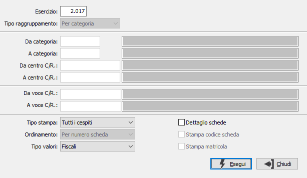

Stampa riepilogo cespiti
Il programma esegue la stampa del riepilogo delle schede cespiti per categoria fiscale.

ESERCIZIO: indicare l'esercizio a cui si riferiscono gli ammortamenti per i cespiti da riepilogare. Viene automaticamente proposto l'esercizio corrente, modificabile. Non è consentita la conferma a vuoto.
TIPO STAMPA: definisce lo stato dei cespiti da selezionare. Valori ammessi: Tutti i cespiti; Esclude i cespiti dimessi; Solo i cespiti dimessi.
TIPO VALORI: il campo è presente solo se attiva la gestione degli ammortamenti fiscali e definisce se stampare i valori fiscali o civilistici.
DETTAGLIO SCHEDE: definisce se effettuare la stampa del dettaglio delle schede cespiti (casella con segno di spunta).